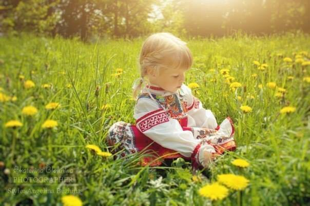
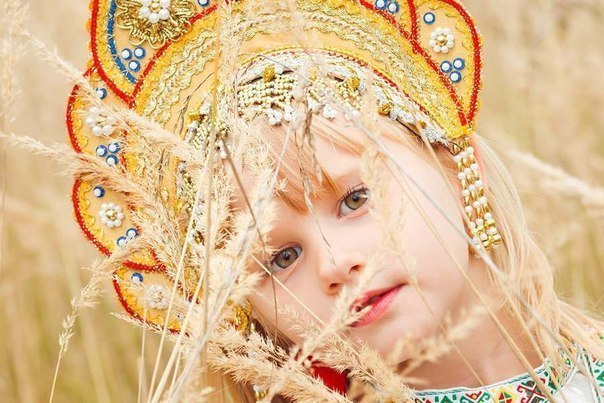
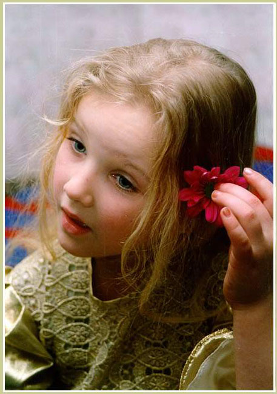
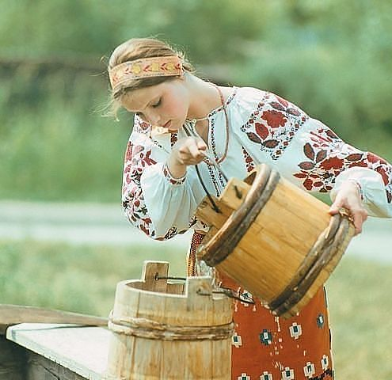
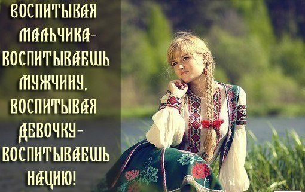

«Исполняющие Небесные Устои Светлых Богов, Мать-Природа дарует жизненные силы, а Небесные Боги даруют Роду его, счастье в сердце и богатство детьми. Боги-Покровители Рода оберегают сего благостного человека и близких его, от всякого зла, кривды, тьмы и обмана, и сия Благость, также истинна и верна, как свет Ярилы-Солнца в Небесах, и как постоянное течение воды в реке».
Слово Мудрости волхва Велимудра
ВЕДИЧЕСКОЕ ВОСПИТАНИЕ ДЕВОЧЕК.

Воспитание девочки – это дать ей понимание значимости: что такое семья, зачем она нужна, чтобы девочка правильно ориентировалась во всех семейных делах и взаимоотношениях. В Ведической культуре девочка воспитывалась дома, и часто маме помогали подруги и знакомые, искусные в разных областях: в кулинарии, вышивании и т. д. Конечно же качества характера девочки воспитывались в соответствии с поведением взрослых женщин, на которых она смотрела.
Когда в мир приходит душа, она приходит с большой любовью в сердце, и только от родителей, зависит, будет ли девочка счастлива. Как её воспитают, сколько тепла, ласки и знаний вложат в неё, так она и будет строить свой мир. Словно нежный цветок, расцветает девичья душа. Помните об этом, дорогие родители!
Наши мудрые предки воспитывали своих детей в традиции. Как для мальчика, так и для девочки очень важно вовремя проходить Возрастные Посвящения.
Что такое возрастное посвящение? Душа, проходя возрастное посвящение, взрастает и меняется. Чтобы перейти из одного состояния в другое, необходимо «умереть» в старом качестве и возродится в новом. Самый яркий и всем понятный пример: девушка выходит замуж, она «умирает» как девушка и рождается как женщина, это переход.
Каждое возрастное посвящение – это испытание не только для ребенка, но и для родителей. Когда ребенок проходит этот экзамен, он свидетельствует о готовности к новому отрезку жизни.
Посвята дает внутренний стержень и дополнительную духовно-магическую защиту. В дальнейшем это позволяет стать более успешным. Ребенок обучается определенным навыкам и умениям, которые позволяют ему перейти в соответствующую его возрасту группу и занять соответствующее место в обществе. При возрастном посвящении всегда присутствовал весь Род, вся семья собиралась провести ребёнка на следующий этап. Для родственников это был настоящий праздник, к посвящениям относились очень трепетно, ребёнок чувствовал единство всего Рода и с детства берёг эту традицию. Сопровождалось такое действие обрядом и на каждом посвящении славились те Боги и Богини, которые приходили благословить ребенка. На обрядах пели народные счастливые песни, читались гимны Богам, приносились пожертвы. Большую роль в такой день играет и обрядовая одежда, которую мама подготавливает для дочери. На каждое посвящение шилась своя одежда с определённой вышивкой. Комнату украшали рушниками, на божницу (в красный угол) ставили образы Богинь.
Обряд Имянаречения. Когда ребенок рождается, то этот обряд проводят на девятый день или до сорокового. Маленькому человечку дается тайное и явное имя и вкладывается сила исцеления - Жива. Явное имя используется в миру, им представляются, оно отображает предназначение души для данного воплощения. Тайное имя - это имя нашей души, ключ к родовой памяти, по этому имени нас узнают в других мирах. Имянаречение дает возможность человеку самому отвечать за свои поступки, в ином случае за все действия отвечают наши родители, а если они не наречены, то цепочка уходит вдаль. При наречении у ребенка появляются вторые родители – божатые, это женщина и мужчина, хорошо, если они являются мужем и женой, как единое целое. Это духовные родители, которые будут присутствовать на всех посвящениях, и будут научать, и наставлять ребенка по жизни. Для девочки важна божатая мать, а для мальчика играет большую роль божатый отец.
Посвящение, которое проходит девочка после обряда Имянаречения – это Обряд Пострижен. Когда девочке исполняется годик, ей подстригают волосы. Но полностью головку не подстригают, состригают только пушок. Девочка рождена берегиней, которая приводит в мир души детей, то есть она связана с навью, миром потусторонним, через свои косы. А мальчикам наоборот нужно состригать волосы полностью, чтобы отрезать его от влияния мира Нави, мальчик связан с Правью, вышним миром Богов.
До года ребенка ни кому не показывали, только близким родственникам доводилось нянчиться. Когда после годика ваше чадо находится на «чужих» глазах, его стоит «защищать». Наши бабушки повязывали красную шерстяную ниточку на правую руку ребенка от сглаза. До года ребенок находился под опекой Божича Коляды.

Девочки от 3 до 6 лет. Обряд Зарницы-Провестницы.
В этом возрасте девочкам очень хочется быть похожей на маму: надеть платье, бусики, серьги. При этом посвящении девочке обрядово надевают её первое украшение. Серьги подготавливают божатые родители заранее. Цвет камня в золотых колечках символизирует то, к чему более расположена малышка. На каждое посвящение родители готовят пожертву Богиням и купель для омовения девочки. Воду настаивают на травах, добавляют зерно, как символ плодовитости, и мама, если она счастлива в семейной жизни, кладет на дно купели своё обручальное кольцо, благословляя тем самым дочь на счастливую жизнь. Родители прославляли Вечернюю Зорьку, приносили её пожертву. А на рассвете с молитвами и дарами обращались к Богине Утренней Заре, чтобы было благословение дочери. С этого момента девочка посвящена в будущую Берегиню Рода. Обряд соединяет девочку с женскими божественными проявлениями стихий. Так же благоприятствует осознанию ребенком своего пола и закладке правильного образа будущей женщины. Наполняет девочку женской сутью.
В таком возрасте девочку уже можно приучать к рукоделию. Показывать дочке, как вышиваете сами. Научить её свивать веревочку, делать самую простую куклу. Одевать девочку нукжно, как девочку. Если дочка будет с детства знать, что есть красивые платья и бусы, то это поможет ей развить в себе один из аспектов женственности. Но она должна не только на себе видеть такую одежду, и мама должна показывать пример своим внешним видом. Ребенок всегда подражает взрослым. Рассказывать нужно девочке про то, какие добродетели взращивают в себе Богини. Нужно развивать ещё в маленькой доченьке такие качества как нежность, мягкость, чувствительность, любовь к окружающему миру и животным.
Учите девочку, что мир вокруг нас дышит, он живой. Живые цветы, деревья, трава, живая земля. Вода слышит и чувствует, как и мы. Помните об этом и сами. Рассказывайте дочке о Богах и Богинях. Как земля – Макошь дышит, как она всех любит и дарит всем плоды свои, кормит всех. И как все должны свято относиться к нашей Матери. Рвать травку и цветы и не использовать их в еду по ненадобности нельзя. Если просто сорвать, играться и бросить – это неуважительное отношение, то и каждый разрешает так же неуважительно относиться и к себе. Все травы, деревья и цветы – это волосы нашей Матери. Помните, что Макоша Матушка – это проявление рождения. Она рождает и дает нам право родить. Это старшая Рожаница, именно к ней, женщины, обращаются со своими молитвами, дабы привести в мир Яви светлые души наших предков.
Рассказывайте, что у огня есть несколько проявлений. Это Солнце – Батюшка Дажьбог, который дает нам жизнь, согревает всех нас. Встречайте вместе по утру солнышко молитвами и песнями.
Расскажите своей маленькой Ладушке, что солнце может нас исцелять, если мы его попросим. Еще одно проявление огня, за него отвечает Огнебог, – это огонь, который горит на капищах и в наших печах, на нём мы готовим еду. Относитесь к нему с уважением. Пусть на обеденном столе во время приёма пищи горит свеча. Подарите вашей дочке ответственность, пусть она зажигает свечу перед едой. Так же читайте молитву перед приёмом пищи и благодарите Богов после. Вышнее проявление огня – Отец Сварог, вместе с Матушкой Ладой порождают они Вселенные. Рассказывайте, что ручейки, речки, дождик – вся вода живая. Дана – Богиня воды, маленькая Лада, её влагоречивое проявление в мирах Прави, Яви и Нави. Мы можем нашептать добрые пожелания и обратиться с молитвой к Матушке Дане о здоровье и красоте.
Рассказывайте дочке, что ветерок, который дует на нас, это Стрибог Батюшка. Он нам может помогать в делах.
От Зарницы до Закосычения Богиня Утренняя Заря – вкладывает в девочку свою силу.
Девочки от 6 до 12 лет. Обряд Закосычения.
Это когда девочке обрядово заплетают две косы. Одну косу заплетает мама, другую – отец. В косы заплетают красивые ленты, благоухающие травы. Девочке дарят гребешки, заколки, ленточки. Хорошо, если с этого момента начните больше приучать девочку к домашнему труду, будете учить её готовить, шить, вышивать. Прививайте ей такие качества, как терпение, хозяйственность, аккуратность, трудолюбие. Развивайте в ней мягкость и нежность. В этом возрасте так же учили женской магии и правилам хорошего тона. То, что вложите в этом возрасте в неё и будет ей подмогой в жизни. Закладывайте в неё только самые светлые образы. Садите вместе цветы, рассказывайте ей, как цвета сочетаются между собой. Это скажется на её вкусах в одежде и в быту. Девочка природно будет понимать значение цветов. Хорошо, если девочка будет учиться ответственности с детства. Объясните ей, что за цветами нужно ухаживать, их нужно поливать и подкучивать, а если на цветок не обращать внимание, то он может завянуть. Можно поручить ей уход за животными, например за щенком, объяснять, что его нужно кормить, купать, гулять с ним и убирать за ним. Выпекайте вместе пироги - она будет хорошей хозяйкой. Если девочка будет вышивать, то она будет терпеливой.
Учите девочку общаться с Богами и Богинями молитвами, учите правильно приносить пожертвы. Рассказывайте, к каким Богам нужно обращаться в той или иной ситуации.
Обряд направлен на выход из состояния ребенка в состояние девочки. Это переход от обучения в Роду, то есть у мамы, к обучению в общине, группе сверстников. Так же учит правильному восприятию общества и благоприятствует наполнению девочки женской энергией стихий. В этот период до следующего обряда девочку под свою опеку брала Богиня Леля – Богиня девичьей нежности и кротости.
Посвящение в Лельник девушка проходит, когда ей исполняется 13 лет. Это первый общественный обряд девочки-подростка. Её готовят к состоянию женщины.
Тогда девушка уже могла хороводы водить и песни с девушками петь, на праздниках участвовать в игрищах и гадать на суженного. Такая девушка одевалась уже по-другому, наряжалась в красивые сарафаны и вплетала яркие ленты в косы. Кстати, цвет ленты мог рассказать о том, каким мастерством владеет девушка. Парни обращали на неё своё внимание. Такую девушку уже воспитывали другие девушки, которые прошли обряд Лельника. После Лельника девушку уже могли сватать. С этого момента она усердно готовилась к замужеству. Вышивала себе приданное, готовила одежду, училась домашнему ведовству.
Невесту себе парень выбирал по родословной, которая, как картинка разворачивалась в вышивке, в символике и цветах одежды. Выбирал по волосам, чтобы здоровые и густые были – это здоровье женщины. Выбирал по глазам – это зеркало души. Девушки пели народные песни, которые с младенчества вливались в детскую душу с голосом матери и бабушки. Песня раскрывает внутренний мир человека.
Само посвящение проявляет зрелые божественные качества стихий, он «запускает» её на новый этап и наполняет душу, тело и ум ещё большей силой любви, нежности и женственности. Девушки в таком возрасте проходят обучение, которое раскрывает в ней все силы и умения будущей женщины. Такую подготовку проходят все девочки, а обряд проводится для тех, кому исполняется пятнадцать лет.
После Лельника отдавала Леля девочку под опеку Вечерней Зореньке – Весте, покровительнице девушек, которые должны замуж выходить и девушка проходила следующий обряд.
Обряд Вестунки. Девушки 16 до 20 лет. В таком возрасте проводилась глубокая духовная работа над собой, принятие себя как будущей жены и матери. Проявление чувств, магия стихий. Женственность, любовь и материнство. Девушка обучалась рукоделию, семейным и родовым обрядам. Раскрывала понятие мужчины и принятия его в свой мир.
Каждая девочка в роду является основой будущей семьи, поэтому традиционным воспитанием в ней развивают высокие душевные качества, которые должны проявиться в чистоте помыслов и мудром использовании родовых ведических знаний.
Матери очень внимательно относились к воспитанию девочек и прохождению ими всех возрастных посвящений и обрядов. Чем старше становится дочь, тем большим пониманием о мире и его построении родители должны её наполнить.
Всегда необходимо помнить, что перед вами живая душа, и вы должны помочь ей осознать своё место в этом мире!

В подготовке данной информации использовались ведические материалы и изображения из ресурсов Интернета.